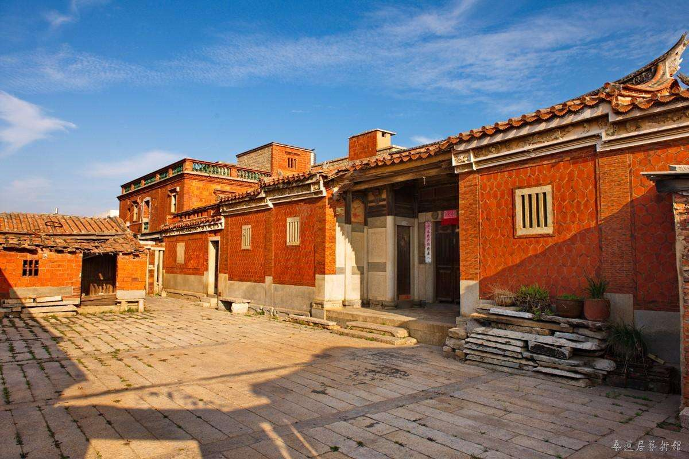
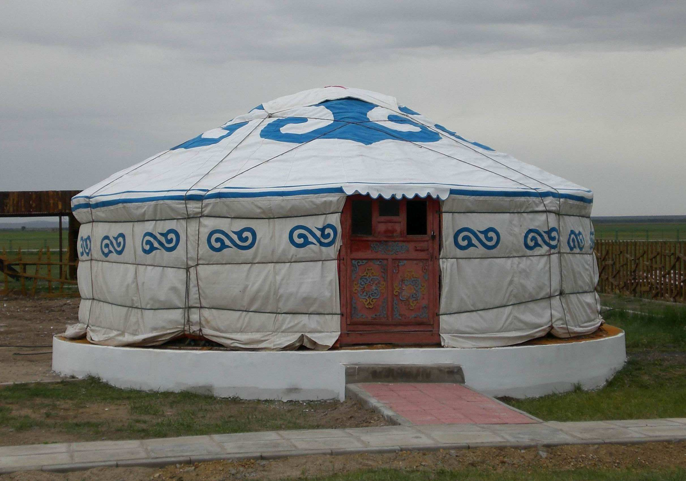

公元4世纪末，拓跋鲜卑建立北魏王朝，不久迁都平城（今大同），至太和改制迁都洛阳前，拓跋鲜卑和各族人民在平城地区生活近百年。
北魏皇室、僧侣的居住生活有迹可循，北魏民众的居室生活同样丰富多彩，既有汉族木构式屋宇建筑，也有胡族穹庐式的毡帐。室内陈设杂融相置，有汉族风情的帷帐、屏风、床榻、连枝灯等，又有鲜明游牧民族特色的石灯、石柱座、胡床等。
 
南北朝民族融合的历史时期，鲜卑的居室受到汉族生活方式影响，汉族木构式的屋宇建筑也出现在不少考古资料中。云波里路北魏壁画墓墓室东壁中间是一处建造在高台之上的木结构屋宇式建筑，墓主夫妇端坐屋宇之中，建筑为庑殿顶，正脊端设鸱尾，顶部有宝珠状装饰，侧坡面上立凤鸟，檐下设一斗三升和人字栱，台基周边设围栏、望柱。北魏太和元年（477年）宋绍祖墓的葬具为一石椁，造型仿中国传统木构建筑，再现了北魏民居的四柱三开间及一斗三升人字栱的结构形式，直观形象地表现了北魏建筑的形制特征和装饰艺术，是研究中国古代建筑史珍贵的实物资料。2014年大同云波里华宇工地出土了一件精美的彩绘陶屋，虽为明器，但极为逼真。陶屋为仿木构建筑，平面长方形，是一座小型殿宇规制。屋顶为宽大庑殿顶，正脊曲线柔美，上饰鸱吻。陶屋正面开门，上用莲瓣纹门簪三枚，正中的为圆形，左右两侧为方形。该陶屋丰富和补充了北魏建筑实物样式，具有极高的研究价值。北魏的屋宇建筑在当时石窟艺术中也多有体现，如云冈石窟第9、12等窟将佛像雕凿于屋形石龛之中，其采用的人字形斗拱和八角立柱为北魏时期典型的建筑风格。
北魏居室内还陈设有其他一些常见的生活物品，比如灯具、石柱础、砚台和铜镜。北魏墓室中出土不少灯具，有石灯、彩绘陶灯、釉陶多枝灯和铁灯。大同城东雁北师院北魏墓群出土一件釉陶多枝灯，底部直径20.5厘米、通高41厘米，由盘、柱、底座、枝灯四部分组成。灯盘呈圆形，微敛，方唇，平底；灯柱上细下粗；底座呈喇叭形状；枝灯共八个，小灯盘呈圆形，小灯柄弯曲细长，错落安置于灯体。石柱础在大同北魏墓也常有发现。将屏风插合安装在石础上，这样组合起来的石础木屏风再用于床榻后部和左右两侧。大同北魏司马金龙墓出土有5块木板屏风，还有4件精雕的细砂岩小柱础，这几件柱础应该就是系屏板用的。大同城南轴承厂北魏窖藏遗址曾发现一件精美的文房用具——石雕砚台，长21.2厘米、宽21厘米、高9.1厘米，砚面中心为方形砚池，四周饰精美纹饰，四侧雕人物图案和吉祥花鸟内容。石雕砚台这样的文房用具反映了平城时期人们对雅致文化生活的追求。铜镜是古人平日生活所用，大同迎宾大道北魏墓群出土了一件铜镜，直径17厘米，锈蚀，圆形，镜面微凸，背设半球形纽。
总而言之，北魏时期的建筑风格吸收了胡汉民族的多种元素，同时受到佛教建筑的影响，此时期人们的跪坐方式开始向垂足坐姿发展，新出现了束腰圆凳、胡床等高足家具，同时传统家具如床、榻等也增加足高以适应时代潮流，以此可证中国古代家具进入到一个新的历史阶段。